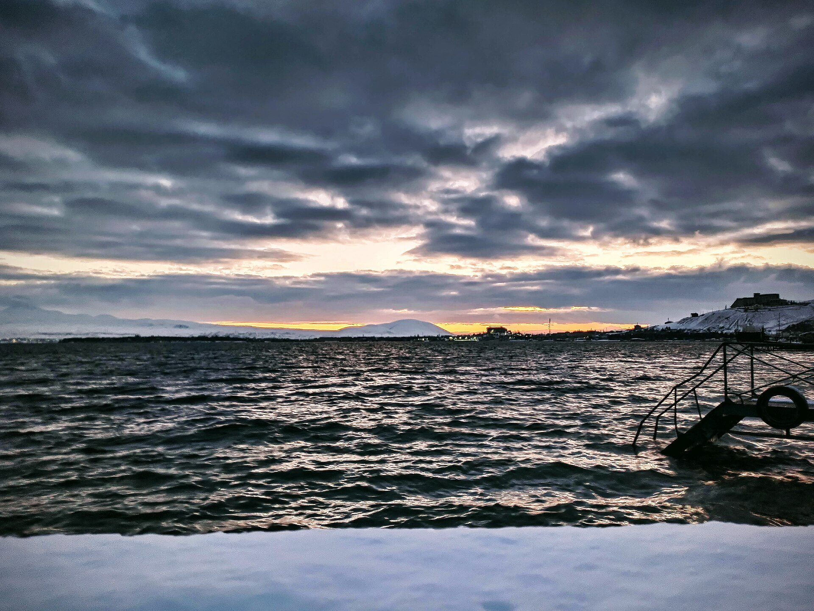
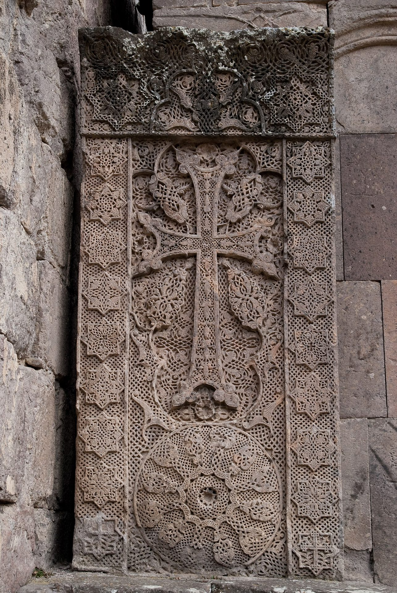
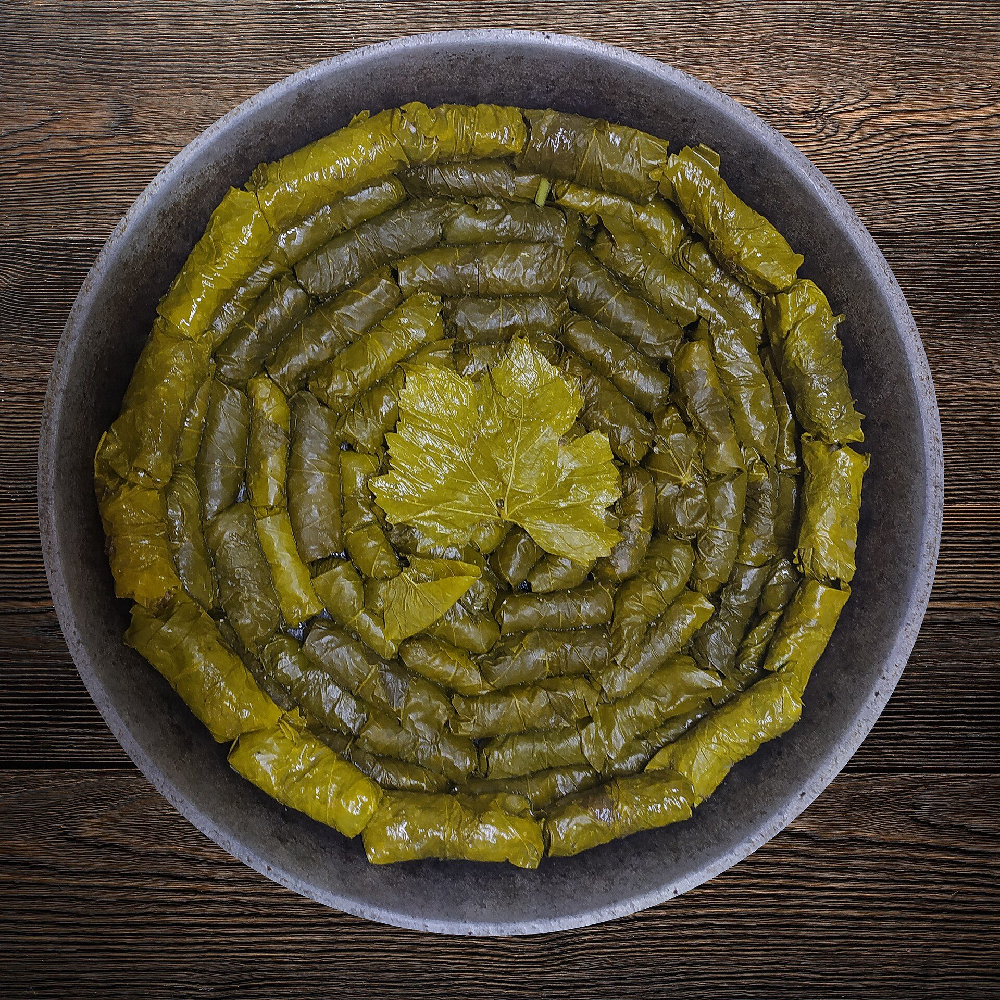
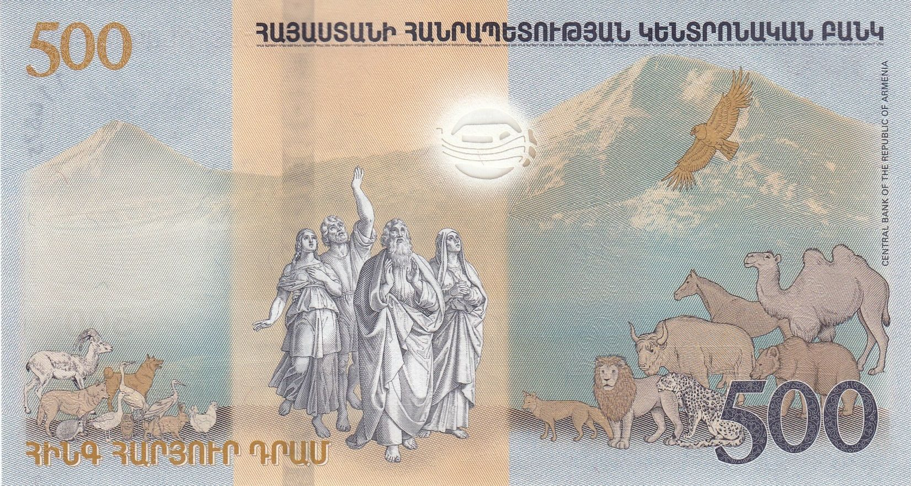
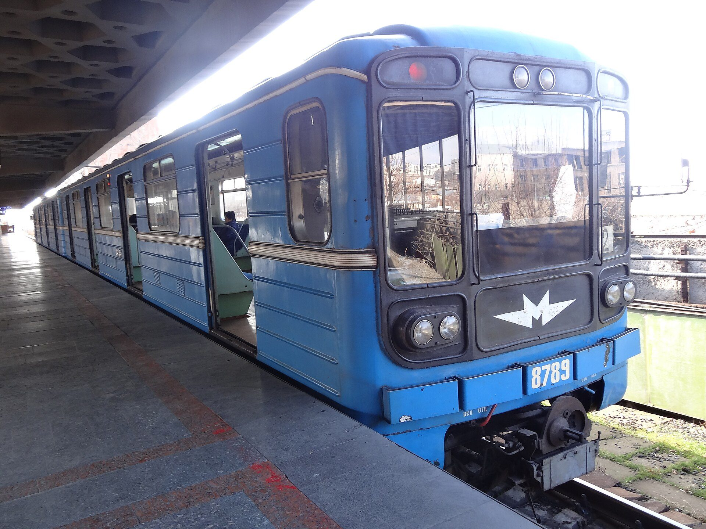
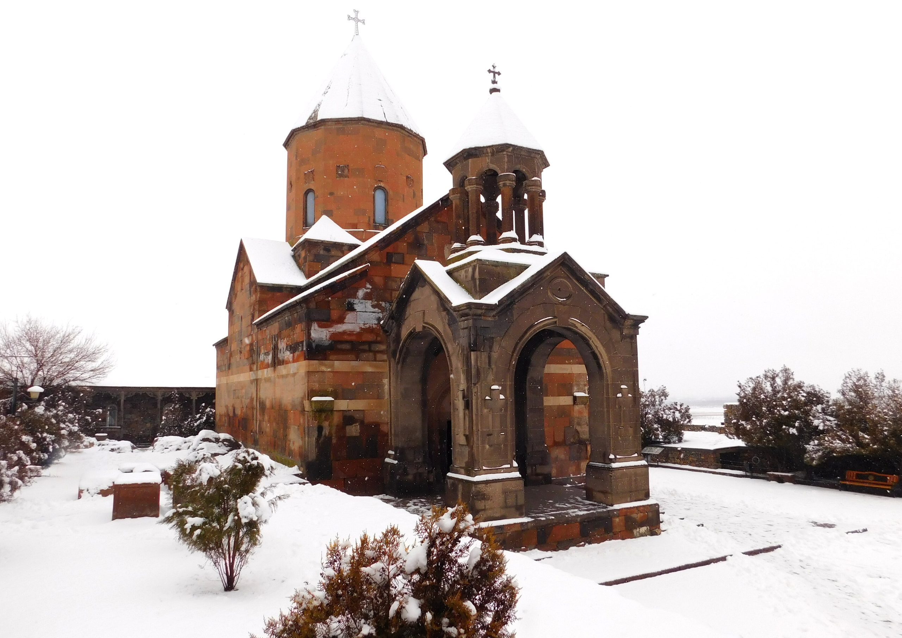

A land where every corner tells a story
Nestled in the South Caucasus, Armenia is one of the oldest countries in the world. From ancient monasteries carved into dramatic mountains to lively city streets, peaceful villages, and stunning natural landscapes, Armenia offers something special for every traveler.
Step beyond the capital and discover the true beauty of Armenia. Explore centuries-old monasteries surrounded by mountains, walk through picturesque valleys and forests, visit traditional villages, taste authentic Armenian cuisine, and experience the legendary hospitality of the Armenian people.



Yerevan, the Pink City
Beautiful architecture, cozy cafés, local restaurants, lively atmosphere, and breathtaking views of Mount Ararat.
Ancient monasteries
Centuries-old sacred places surrounded by mountains, valleys and forests.
Nature lovers' paradise
Lake Sevan, the landscapes of Dilijan, the cliffs of Noravank and the Armenian highlands.
Armenian cuisine
Traditional dishes from fresh local ingredients, Armenian wines and fruits, shared with stories and laughter.
About Armenia
Everything worth knowing before you go — from ancient traditions and sacred places to money, food and getting around.

Armenian Culture and Art
Armenian culture is a unique blend of ancient traditions and creative expression. Armenian music, dance, literature, and visual arts have developed through centuries and remain an important part of the country's identity.
One of Armenia's most distinctive art forms is khachkar carving — beautifully detailed stone crosses that can be found throughout the country. Traditional crafts, embroidery, pottery, and carpet-making also reflect the creativity and skill passed down from generation to generation.
For visitors, Armenian culture offers a chance to discover a living heritage through art, traditions, and local experiences.

Armenia and Religion
Armenia has a deep religious heritage and is home to the Armenian Apostolic Church, one of the world's oldest Christian churches. Christianity became Armenia's state religion in 301 AD, making it the first country to officially adopt Christianity.
Today, monasteries and churches can be found throughout the country, many surrounded by remarkable landscapes. These sacred places offer visitors an opportunity to discover Armenia's spiritual traditions, architecture, and history.
Visiting churches
- Dress modestly — covered shoulders and knees are appreciated.
- Keep your voice low, especially during services.
- Avoid flash photography when a service is taking place.
- Lighting a thin candle at the entrance is a beautiful local tradition.
Armenian Cuisine
No visit to Armenia is complete without its food. Traditional dishes are prepared with fresh local ingredients and are usually shared at a big table — accompanied by stories, toasts and genuine hospitality.




Currency in Armenia
The official currency of Armenia is the Armenian Dram (AMD), symbolized as ֏. Banknotes and coins are available in different denominations.
Foreign currency can easily be exchanged at banks and licensed exchange offices, which are widely available in Yerevan and other major cities. International bank cards are also accepted at many hotels, restaurants, and shops, while carrying some cash is recommended for smaller businesses and local markets.

Getting Around
Armenia is compact, so most sights can be reached on a day trip from Yerevan. The capital itself is walkable, and getting around is easy and affordable.
- Airport. Zvartnots International Airport is about 12 km from the city centre — a short transfer or taxi ride.
- Taxi apps. Yandex Go and GG are cheap, reliable and show the price upfront.
- Metro. Yerevan has a single metro line — a quick way to cross the city.
- Minibuses. Marshrutkas connect Yerevan with Sevan, Dilijan, Gyumri and other towns.
- Tours & transfers. The most comfortable way to reach mountain monasteries and remote sights.
Must-See Places
Beyond the classic routes, these are the places travellers fall in love with.



Practical Tips
Blooming valleys, mild weather — ideal for sightseeing and hiking.
Hot in Yerevan, perfect at Lake Sevan and in the mountains.
Harvest and wine season with golden landscapes.
Snowy monasteries, skiing in Tsaghkadzor and festive Yerevan.
Local SIM cards and eSIMs are easy to get; free Wi-Fi is everywhere in cafés and hotels.
230 V, European plugs (type C / F) — bring an adapter from the US or UK.
Tap water is safe in Yerevan, and you'll find free drinking fountains (pulpulaks) on the streets.
Armenia is welcoming and safe; just follow the usual travel precautions.
It is an experience
Frequently Asked Questions
Do I need a visa to visit Armenia?
Visa requirements depend on your nationality. Citizens of many countries can visit Armenia visa-free, including most EU countries, the United States, the United Kingdom, Canada, the United Arab Emirates, Qatar, Australia, and Japan. Visa requirements may vary depending on nationality and length of stay, so travelers should check the latest entry requirements before their trip.
What is the best time to visit Armenia?
Armenia is a beautiful destination all year round, with every season offering its own unique charm.
What language is spoken in Armenia?
Armenian is the official language. English and Russian are also commonly used in tourist areas.
Can I use my bank card?
Yes. Cards are widely accepted in hotels, restaurants, supermarkets, and many shops. Cash is useful for smaller businesses and local markets.
Is Armenia safe for tourists?
Yes, Armenia is generally a welcoming and comfortable destination for tourists. Visitors are advised to follow basic safety precautions and local guidelines.
What should I try in Armenia?
Be sure to experience traditional Armenian cuisine, including khorovats, dolma, lavash, gata, local fruits, Armenian wine, and the country's famous Armenian brandy.
Is tap water safe to drink?
Yes. Tap water is generally safe to drink in Yerevan and many other parts of Armenia. Bottled water is also widely available.
Will I have mobile connection and internet access?
Yes. Mobile coverage, Wi-Fi, and internet access are widely available in Yerevan and most tourist destinations. Free Wi-Fi is commonly provided in hotels, cafés, restaurants, and other public places. Local SIM cards and mobile internet packages are also easy to obtain. Our tour packages already include mobile internet as an eSIM.
Where every journey becomes a memory
Discover its history, explore its landscapes, taste its flavors, and meet its people.
Explore the tour